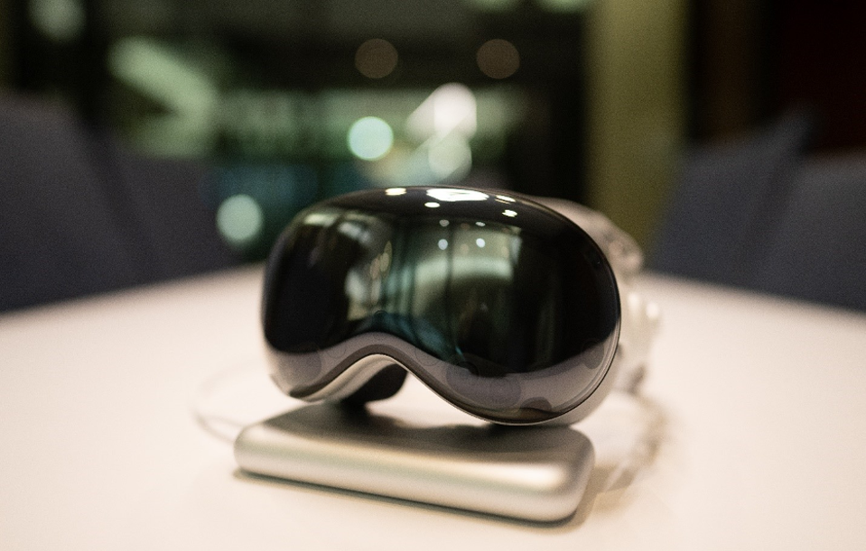

Apple Vision Pro: A Comprehensive Review
In this comprehensive review, Anshel Sag examines the Apple Vision Pro headset through a detailed lens, covering various aspects including the initial buying experience, hardware specifications, setup process, user interfaces, app ecosystem, target market, and future expectations. Sag provides critical insights into the device's design decisions, highlighting its strengths such as the intuitive eye tracking and pinch gesture interface, while also addressing concerns like the lack of USB ports and the hefty price tag. With a focus on both the device's capabilities and its potential impact on the extended reality (XR) market, this review offers a balanced perspective on the Vision Pro's position in the evolving landscape of immersive technology.
Narrative 1/2
Innovative Advancements: The Vision Pro's Transformative Potential in XR
The positive perspective on the Apple Vision Pro (AVP) emphasizes its groundbreaking technology and transformative potential in the extended reality (XR) market. It acknowledges Apple's efforts in creating a premium, high-quality device that pushes the boundaries of spatial computing. This perspective appreciates the AVP's advanced features such as eye tracking and foveated rendering, which contribute to an immersive user experience and pave the way for future developments in AR and VR technologies. Additionally, it sees the AVP as a catalyst for innovation and competition in the XR industry, driving investment and encouraging developers to explore new possibilities in spatial computing applications. Overall, this perspective is optimistic about the AVP's role in shaping the future of immersive technology and its potential to inspire further advancements in the field.
Narrative 2/2
Assessing Limitations and Challenges of the Vision Pro
On the other hand, the critical perspective offers a more skeptical view of the Apple Vision Pro (AVP), highlighting its shortcomings and questioning its suitability for a broader consumer audience. This perspective raises concerns about the device's high price point, heavy weight, and ergonomic issues, suggesting that these factors could limit its appeal and accessibility. It also critiques certain design decisions, such as the absence of USB ports for data connectivity, and expresses disappointment with the perceived lack of innovation in the AVP's app ecosystem and user experience. Additionally, this perspective is cautious about the device's mass-market potential, citing challenges related to app discoverability and the overall value proposition compared to other VR and AR alternatives. Despite acknowledging the AVP's technological advancements, this perspective calls attention to areas for improvement and expresses reservations about its broader adoption.